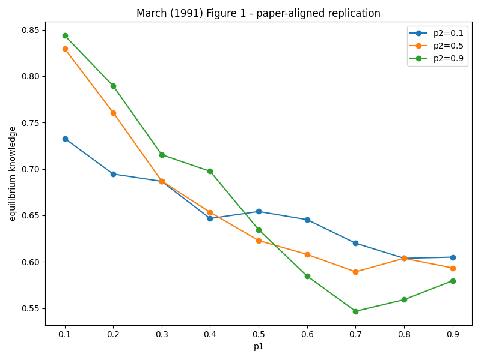
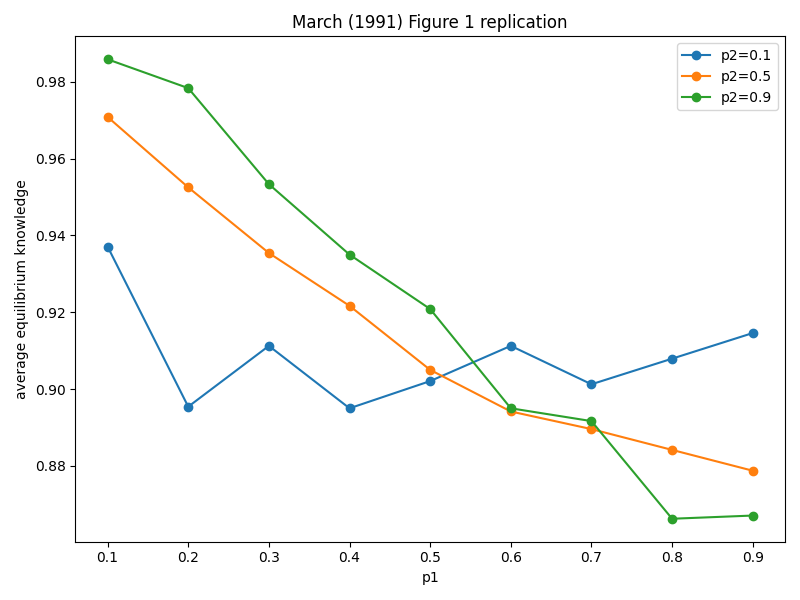
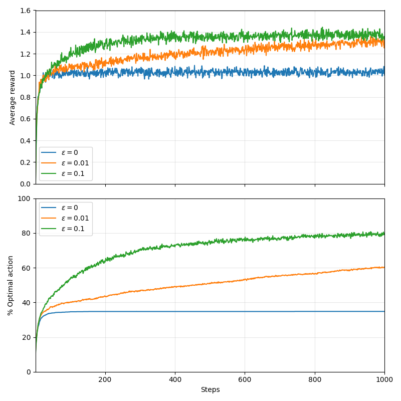
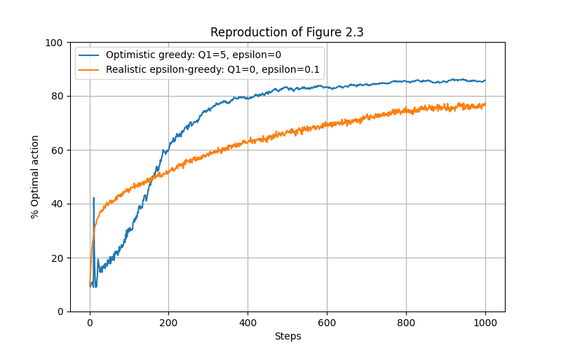
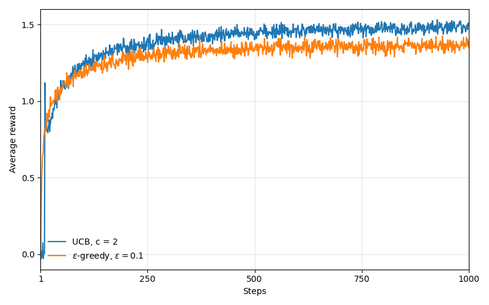
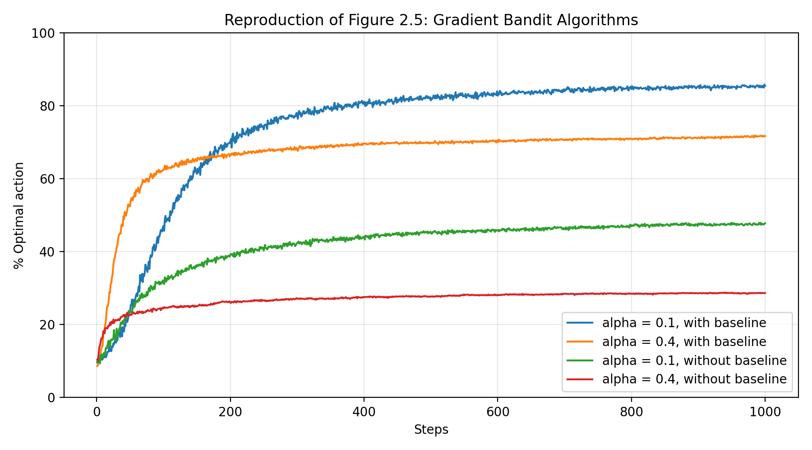
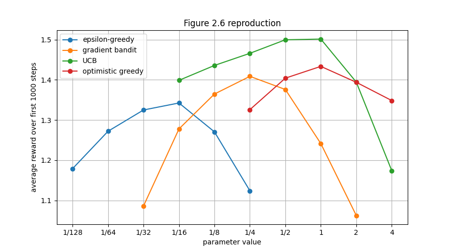
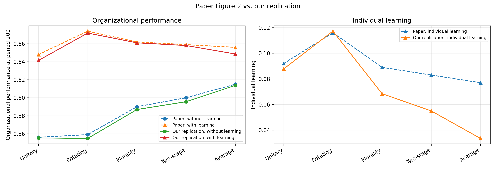

Research
Research Timeline
Data-driven decision making under uncertainty → Screening

Screening + Learning
Replication Notes
Replication 1: March (1991) Figure 1 Mutual learning and organizational knowledge ›
This replication revisits Figure 1 in March's mutual-learning model. The figure illustrates a central idea in organizational learning: rapid socialization may help individuals align with the organizational code in the short run, but it can reduce long-run organizational knowledge by eliminating the diversity from which the code learns.
Focus: mutual learning between individuals and an organizational code.
Outcome: equilibrium organizational knowledge.
Method: simulation-based replication.


Replication 2: Bandit Model Exploration, exploitation, and action-value learning ›
This replication focuses on the multi-armed bandit setting, where a learner repeatedly chooses among alternatives and receives evaluative feedback. I reproduce several core examples that illustrate the exploration-exploitation trade-off.
Focus: exploration and exploitation in bandit problems.
Outcome: average reward and percentage of optimal action.
Method: simulation-based reproduction of textbook figures and exercises.






Replication 3: Aggregation–Learning Trade-off Organizational performance and individual learning ›
This replication focuses on how organizational decision-making structures shape both organizational performance and individual learning. The model compares decision rules such as unitary, rotating, plurality, two-stage, and average-beliefs structures.
Focus: aggregation, learning, and decision-making structures.
Outcome: organizational performance and individual learning.
Method: computational replication.

Selected Readings
DOI: 10.1002/smj.70098